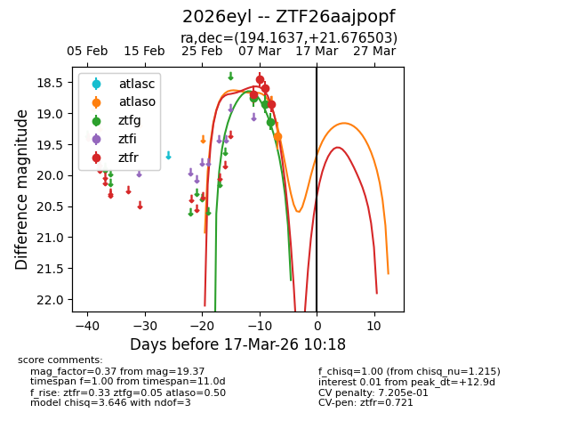
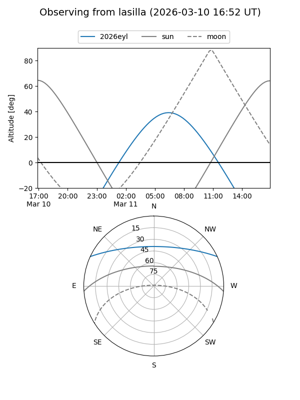
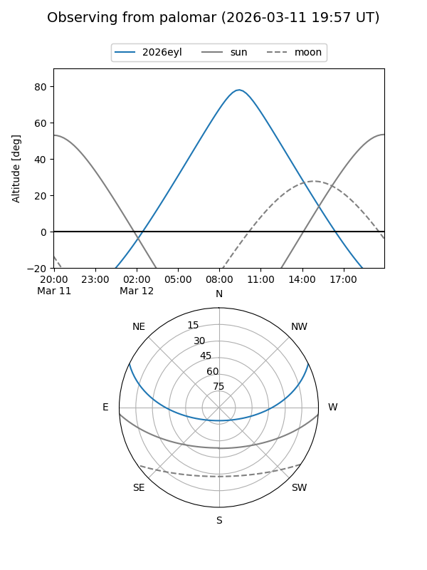
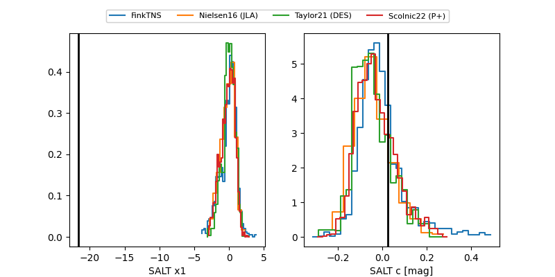

2026eyl
Target 2026eyl at 2026-03-17 10:20
Aliases and brokers:
FINK: link
Lasair: link
ALeRCE: link
TNS: link
YSE: link
alt names
ZTF26aajpopf (ztf,fink_ztf)
2026eyl (tns,yse)
Coordinates:
equatorial (ra, dec) = 194.1637,+21.67650
equatorial (HMS+DMS) = 12:56:39.28,+21:40:35.41
galactic (l, b) = (315.4968,+84.42053)
Flags:
likely cv
Photometry:
last atlaso=19.37, ztfg=19.13, ztfr=18.85
1 atlaso, 3 ztfg, 4 ztfr detections
Lightcurve

Visibility


Additional plots
